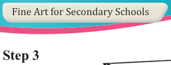
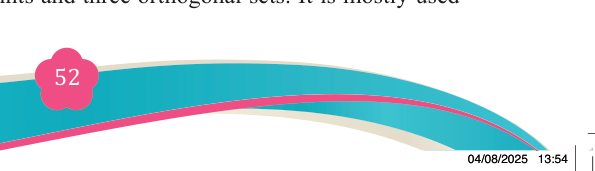
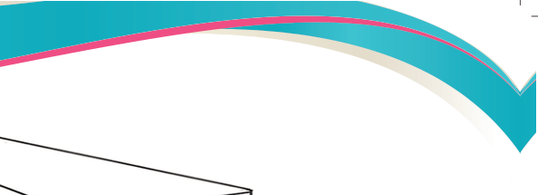
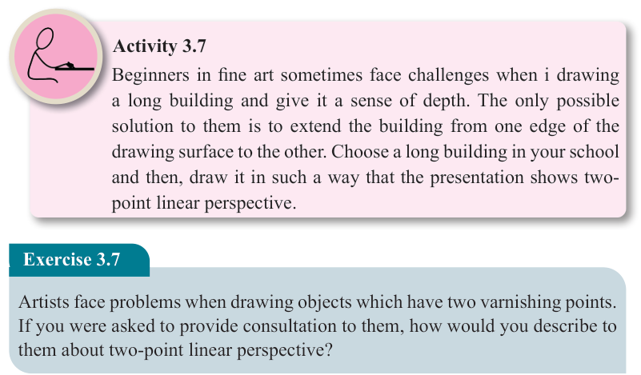
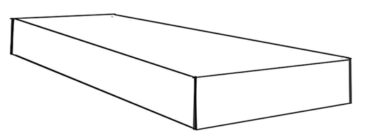
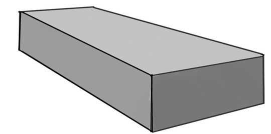

Step 3


(c): A box without the orthogonal
Step 4

(d): A complete shaded box drawing without the orthogonal

Figure 3.22(a-d): Steps on how to draw two-point linear perspective
Activity 3.7
Beginners in fine art sometimes face challenges when i drawing a long building and give it a sense of depth. The only possible solution to them is to extend the building from one edge of the drawing surface to the other. Choose a long building in your school and then, draw it in such a way that the presentation shows two- point linear perspective.
Exercise 3.7
Artists face problems when drawing objects which have two varnishing points.
If you were asked to provide consultation to them, how would you describe to them about two-point linear perspective?
(iii) Three-point linear perspective
A three-point linear perspective is a perspective that utilizes three vanishing points to create an illusion of depth on a two-dimensional surface. It uses three different vanishing points and three orthogonal sets. It is mostly used